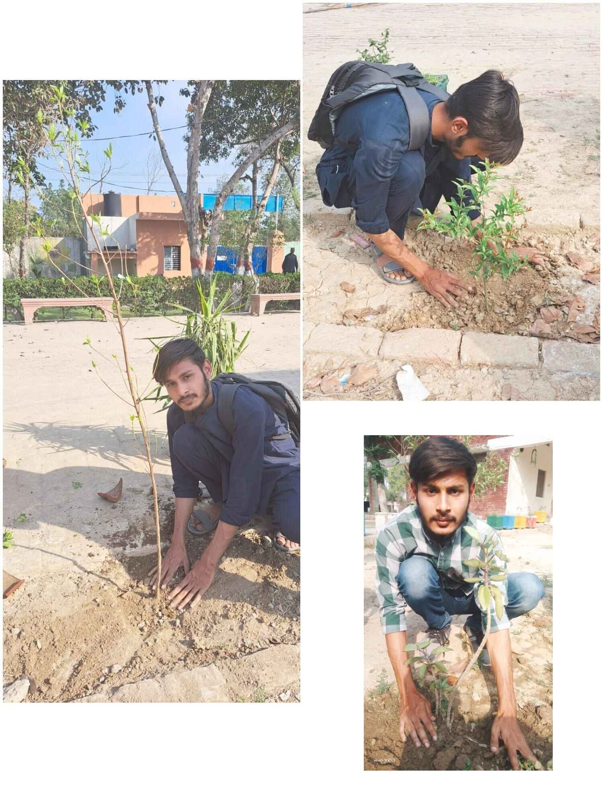
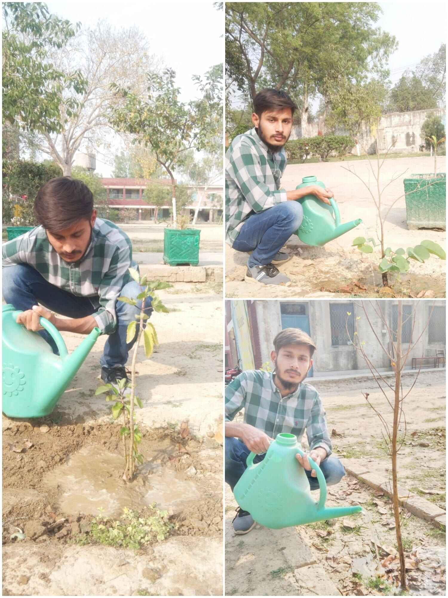
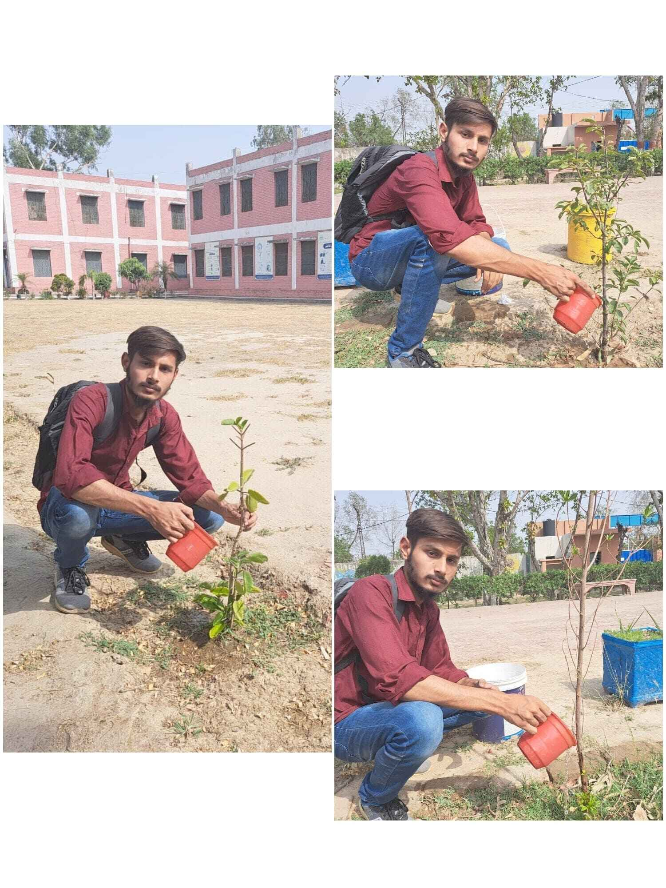

Tree Plantation Portfolio
Location: Govt. Higher Secondary School, Johar Twon
Planting (first phase)
↓

↓
Second Month
↓

↓
Third Month
↓

Plants
- Cono Plant
- Ficus Benjamina Plant
- Guava Plant
Observations on Tree Growth
Cono Plant: This plant showed slow and steady vertical growth. It
maintained a healthy green color and its shape became fuller over time.
I noticed new branches forming by the second month.
Ficus Benjamina: The
Ficus adapted quickly and grew well. It developed more
flexible branches and shiny, healthy leaves. Some leaf drop occurred
early, but it stabilized with regular care.
Guava Plant: The guava plant
was the most interactive to monitor. New leaves appeared within the
first few weeks. By the third month, small flower buds started forming,
showing healthy development.